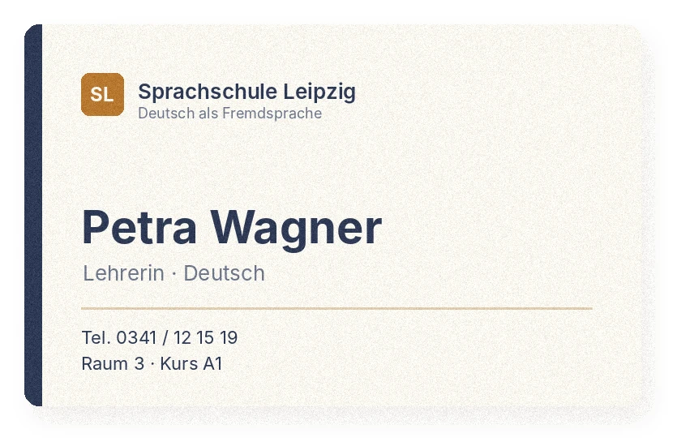
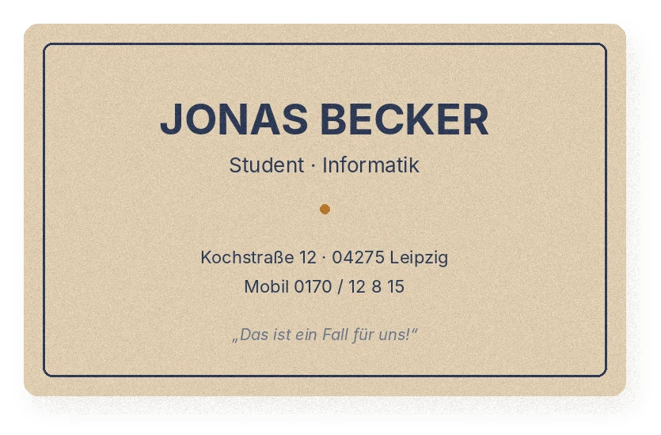
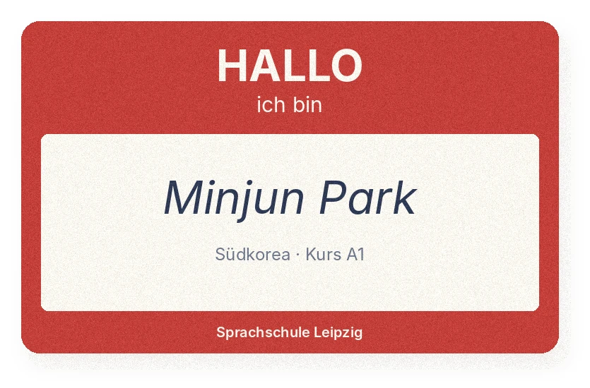
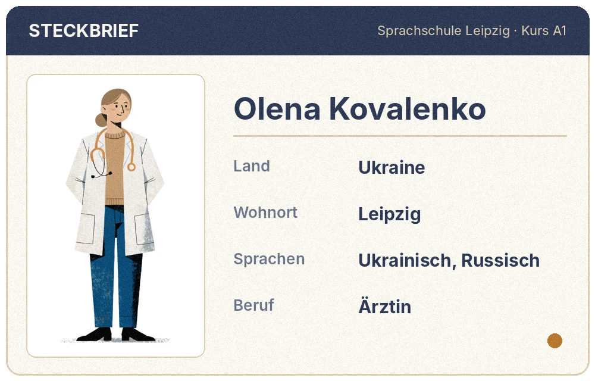
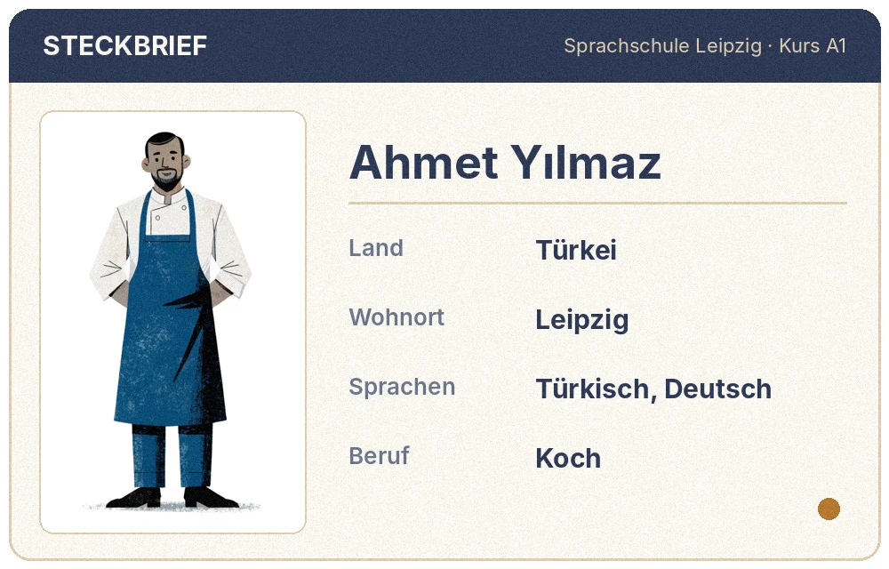

DER FALSCHE KOFFER · A1
목차 Inhalt
시즌 1 · 이 가방은 누구 것일까? – 한 과는 3차시(1주)예요.
- 01Hallo, ich bin Minjun!인사 · 이름과 철자 · 출신과 사는 곳 · 숫자 0–20역에서 가방이 바뀌다시작 →
- 02Meine WG, meine Familie집과 물건 · 가족 · der/die/das · 숫자 21–100가방 속 물건과 사라질 편지시작 →
- 03Im Supermarkt장보기 · 가격 · 4격 · möchten외투 주머니 속 영수증준비 중
- 04Mein Tag und meine Freizeit시간과 하루 일과 · 분리동사 · 약속분실물 센터의 전화준비 중
- 05Wo ist die Nikolaikirche?길 찾기 · 교통 · 명령법사진 속 교회를 찾아서준비 중
- 06Termine und Gesundheit예약 · 병원 · müssen / dürfen / sollen가방 속 약의 비밀준비 중
- 07Was trägt der Mann?옷 · 색깔 · 날씨 · 사람 묘사‘찾습니다’ 전단준비 중
- 08Endlich!지난 일 말하기 · 현재완료 · A1 마무리가방의 주인이 나타나다준비 중
- ModelltestStart Deutsch 1 모의시험준비 중
Hallo, ich bin Minjun!


이번 과가 끝나면
때에 맞게 인사하고 작별 인사를 할 수 있어요.
Hallo! · Guten Tag! · Tschüss!
내 이름을 말하고 철자로 알려 줄 수 있어요.
Ich heiße … · P – A – R – K
어디에서 왔는지, 어디에 사는지 말하고 물을 수 있어요.
Woher kommst du? · Wo wohnst du?
다른 사람을 소개할 수 있어요.
Das ist Priya. Sie kommt aus Indien.
0–20 숫자와 전화번호를 말할 수 있어요.
null – eins – sieben – sechs
4–5문장으로 나를 소개하는 글을 쓸 수 있어요.
Ich heiße … Ich komme aus …
이번 과에서 배우는 문법
이번 주 수업 · 3차시
Hallo! Ich bin Minjun.
1 · Einstieg · 그림으로 시작해요 5분

1a 그림을 보고 한국어로 이야기해 보세요. 가방 두 개가 똑같네요. 무슨 일이 생길까요?
1b 이번 과가 끝나면 이런 말을 할 수 있어요. 들어 보세요!
Hallo! Ich heiße Minjun. Ich komme aus Südkorea. Ich wohne in Leipzig.
안녕하세요! 제 이름은 민준이에요. 한국에서 왔어요. 라이프치히에 살아요.
2 · Hallo! · 첫 독일어 인사 10분
카드를 눌러 듣고, 소리 내어 세 번씩 따라 하세요.
- 아침 8시, 어학원 선생님께 →
- 오후 2시, 관청 직원에게 →
- 저녁 7시, 이웃 할머니께 →
- 친구와 헤어질 때 →
- 선생님과 헤어질 때 →
- 밤 9시, 호텔 직원에게 처음 →
- 아침 7시, 빵집 주인에게 →
- 점심때, 은행 직원에게 →
- 누가 문을 잡아 줬어요. →
- 지하철에서 다른 사람의 발을 밟았어요. →
- 저녁 8시, 처음 보는 이웃을 만났어요. →
- 면접이 끝나고 면접관에게 →
- 누가 “Entschuldigung!” 하고 사과했어요. →
3 · Hören · 누가 누구에게 인사해요? 10분
짧은 대화 다섯 개예요. 각 번호의 ▶를 눌러 듣고 문제를 푸세요. 대본은 다 푼 뒤에!
- Guten , Frau Wagner!
- Hi, Jonas! Wie ?
- Guten , Frau Schulze.
- Tschüss! Bis !
- Auf , Frau Wagner!
대본 보기 (문제를 다 푼 뒤에!)
새 표현: Bis morgen! = 내일 봐! · Hi! = 안녕! (아주 친한 사이)
4 · Teil A · Am Bahnhof · 역에서 15분
Track 1-01 기차에서 내린 민준. 누군가 기다리고 있어요.
(쿵! 민준이 검은 가방을 든 노신사와 부딪친다.)
(두 사람이 서둘러 가방을 집어 든다.)
| # | 문장 | r | f |
|---|---|---|---|
| 1 | Der Mann sagt: „Danke!“ | ||
| 2 | Minjun sagt zum Mann: „Kein Problem.“ | ||
| 3 | Jonas fragt: „Wie heißt du?“ | ||
| 4 | Jonas wartet am Bahnhof. (warten = 기다리다) | ||
| 5 | Minjun ist sehr gut. (sehr = 아주) | ||
| 6 | Minjun ist ein bisschen müde. |
- Entschuldigung! –
- Wie geht's? –
- Bist du Minjun? –
- Willkommen in Leipzig! –
A4 혼자 소리 내어 읽기 · ▶로 한 줄씩 듣고 민준 역할을 따라 하세요. 두 번째는 Minjun 대신 내 이름을 넣어서!
5 · 오늘의 문장 틀 ① · 나는 ○○이에요 10분
오늘의 문장 틀 – 먼저 듣고 세 번 따라 말하기
- Ich Minjun.
- du Jonas?
- Wie du?
- Ich Lena.
- du Jonas?
- Du Lena, oder?
- 나는 민준이야. → Ich Minjun.
- 네가 레나야? → du Lena?
- 내 이름은 요나스야. → Ich Jonas.
- 너는 이름이 뭐야? → heißt du?
- 나는 레나야. 너는? → Ich bin Lena. du?
6 · Das Alphabet · 소리와 글자 15분
6a 글자를 눌러 들어 보세요. 독일어는 글자대로 읽는 언어예요. 이 소리들만 알면 처음 보는 단어도 읽을 수 있어요!
6b 한국어·영어와 다르게 읽는 글자 – 이것만 조심하세요!
| 글자 | 소리 | 예 | 요령 |
|---|---|---|---|
| w | [v] | Wie, wohnen | 윗니로 아랫입술을 살짝 물고 ‘ㅂ’ |
| z | [ts] | zwei, zehn | 짧은 ‘츠’ |
| j | [j] | ja, Jonas | ‘야, 요’ |
| v | [f] | Vater, vier | ‘ㅍ’에 가까운 f 소리 |
| ei | [ai] | heißen, drei | ‘아이’ |
| ie | [iː] | Wie, vier | 길게 ‘이—’ |
| eu | [ɔy] | Leute, neun | ‘오이’ |
| sch | [ʃ] | Tschüss, Schulze | ‘슈’ |
| ä · ö · ü | Mädchen, schön, müde | ‘애 · 외 · 위’ – 입술 모양 주의 |
dr · vr · hßen · W · S · fr
- → sben
- → nn
- → zw
- → Lte
- → Lpzig
- → w
7 · Buchstabieren · 이름 철자 말하기 15분
철자를 물을 때 – 먼저 듣고 세 번 따라 말하기
대본 보기 (듣기가 끝난 뒤에!)
7b 아래 대화를 보고, B 자리에 내 이름을 넣어 혼자 소리 내어 말하세요. 철자는 한 글자씩 또박또박!



- 바그너 선생님의 Vorname →
- 요나스의 Nachname →
- 민준의 Nachname →
- 요나스는 무엇을 공부해요? →
- 바그너 선생님의 수업은 어디에서? → Raum
- 요나스의 휴대폰 번호 →
- 내 한국 이름(예: 김서연)을 독일식으로 쓰면? Vorname → , Nachname →
8 · Im Kurs · 수업 시간에 쓰는 독일어 10분
수업 중에 꼭 쓰는 말 – 먼저 듣고 세 번 따라 말하기
- 선생님 말이 너무 빨라요. →
- 못 들었어요. 다시 듣고 싶어요. →
- „Mantel“이 무슨 뜻인지 몰라요. →
- 설명을 들었지만 모르겠어요. →
- 이름 철자를 알고 싶어요. →
8b 교재와 시험에 나오는 지시문이에요. 듣고 따라 하세요.
- Schreiben Sie. →
- Hören Sie. →
- Ergänzen Sie. →
- Kreuzen Sie an. →
- Lesen Sie. →
9 · Sprechen · 첫 만남 대화 10분
Track 1-06 어학원 첫날, Lena가 복도에서 Priya를 만나요.
9b 혼자 말하기 · ▶로 A 줄만 듣고, 멈춘 뒤 B를 내 이름으로 소리 내어 대답하세요. 휴대폰으로 녹음해서 들어 보면 더 좋아요!
1차시 숙제 (60분)
| # | 할 일 | 시간 |
|---|---|---|
| 1 | 인사말 카드 8개 + Teil A 대화 듣고 따라 하기 – 소리 내어 3번씩 | 10분 |
| 2 | H1 인사와 문장 쓰기 | 10분 |
| 3 | H1c · H1d 철자 받아쓰기, 대화 완성 | 15분 |
| 4 | H1e · H1f · H1g 상황 판단, 질문 만들기, 틀린 문장 고치기 | 15분 |
| 5 | 녹음: “Hallo! Ich heiße … Wie heißt du?” + 내 이름 철자를 녹음해서 제출 | 10분 |
- 친구에게 처음 인사:
- “내 이름은 민준이야.” → Ich Minjun.
- “네가 요나스야?” → du Jonas?
- “너는 이름이 뭐야?” → Wie du?
- 선생님과 헤어질 때:
- 고마울 때:
- “괜찮아요.” → Kein .
| # | 문장 | r | f |
|---|---|---|---|
| 1 | 밤 10시, 이웃에게 처음: „Guten Morgen!“ | ||
| 2 | 오후 3시, 우체국 직원에게: „Guten Tag!“ | ||
| 3 | 교수님과 헤어질 때: „Tschüss, Professor!“ | ||
| 4 | 친구가 „Danke!“라고 했어요. 대답: „Entschuldigung!“ | ||
| 5 | 다른 사람과 부딪쳤어요: „Entschuldigung!“ | ||
| 6 | „Wie geht's?“에 대한 대답: „Gut, danke.“ |
- Du bist Lena. →
- Du heißt Jonas. →
- Du bist müde. →
- Du heißt Minjun Park. →
- Ich heißt Lena. →
- Du bin Jonas? →
- Wie heiße du? →
- Ich bin heiße Carlos. →
- guten abend! →
Woher kommst du?
복습 5분
인사 릴레이: 원으로 서서 „Hallo! Ich heiße … Wie heißt du?“를 차례로 이어 가기.
10 · Teil B · In der WG · 공유 주택에서 10분
Track 1-02 WG에 도착하자 룸메이트 Lena가 부엌에서 나와요.
(민준이 가방을 연다. …잠깐.)

- Minjun kommt aus .
- Lena kommt aus .
- Lena wohnt jetzt in .
- Minjun spricht .
| # | 문장 | r | f |
|---|---|---|---|
| 1 | Lena kommt aus Leipzig. | ||
| 2 | Minjun spricht sehr gut Deutsch. | ||
| 3 | Minjun spricht zwei Sprachen: Koreanisch und Englisch. (Sprachen = 언어들) | ||
| 4 | Lena und Minjun wohnen jetzt in Leipzig. | ||
| 5 | Das ist Minjuns Koffer. | ||
| 6 | Jonas denkt an den Mann am Bahnhof. (denken an = ~을 떠올리다) |
Im Koffer · 가방 속에는…


단어 앞의 der · das · die는 2과에서 배워요. 지금은 색깔만 봐 두세요!
B2 가방의 주인은 누구일까요? 한국어로 한 줄 추리!
11 · 나라와 언어 10분
카드를 눌러 듣고 따라 하세요. 나라 → 언어 한 쌍으로!
- Ich komme aus Polen. Ich spreche .
- Ich komme aus . Ich spreche Spanisch.
- Ich komme aus Deutschland. Ich spreche .
- Ich komme aus . Ich spreche Koreanisch.
- Ich komme aus Indien. Ich spreche Hindi und .
- 스페인 →
- 한국 →
- 독일어 →
- 영어 →
- 폴란드어 →
12 · Hören · 어학원 친구들은 어디에서 왔을까? 10분
어학원 다른 반 학생 네 명이 자기소개를 해요. ▶로 한 사람씩 듣고 알맞은 것을 고르세요.
Ahmet
Land 나라
Wohnort 사는 곳
Sprache 모국어
Mei
Land 나라
Wohnort 사는 곳
Sprache 모국어
Olena
Land 나라
Wohnort 사는 곳
Sprache 모국어
Lucas
Land 나라
Wohnort 사는 곳
Sprache 모국어
| # | 문장 | r | f |
|---|---|---|---|
| 1 | Mei spricht Chinesisch und Englisch. | ||
| 2 | Lucas spricht zwei Sprachen. | ||
| 3 | Olena sagt: „Mein Name ist Olena.“ (Mein Name ist … = 제 이름은 …예요) | ||
| 4 | Ahmet spricht sehr gut Deutsch. |
대본 보기 (문제를 다 푼 뒤에!)
13 · 오늘의 문장 틀 ② · 어디에서? 어디에? 무슨 말? 15분
오늘의 문장 틀 – 먼저 듣고 세 번 따라 말하기
- Ich (kommen) aus Südkorea.
- Woher (kommen) du?
- Ich (wohnen) in Leipzig.
- Wo (wohnen) du?
- Ich (sprechen) Koreanisch.
- (sprechen) du Deutsch?
- kommst du? – Hamburg.
- wohnst du? – Leipzig.
- Ich komme Südkorea, aber ich wohne Leipzig.
- kommt Lena? Sie kommt Hamburg.
- heißt du? – Lena.
- Woher kommst du? –
- Wo wohnst du? –
- Sprichst du Deutsch? –
- Wie heißt du? –
- aus / komme / ich / Südkorea →
- du / wohnst / wo →
- Deutsch / du / sprichst →
- in / wohne / Leipzig / ich →
더 알아보기 · 다른 말이 맨 앞에 오면? (선택)
„Jetzt“(지금) 같은 말이 맨 앞에 와도 동사는 두 번째, 주어는 동사 뒤로 가요. 4과에서 자세히 연습해요.
14 · Teil C · du oder Sie? · 반말과 존댓말 15분
Track 1-03 다음 날 아침, 어학원 첫 수업. 선생님이 말을 걸어요.
- 선생님께 →
- 룸메이트에게 →
- 분실물 센터 직원에게 →
- 반 친구에게 →
- 집주인 할머니께 →
- WG 친구 Jonas에게 →
- Wie heißt du? →
- Woher kommst du? →
- Wo wohnst du? →
- Sprichst du Deutsch? →
- Petra Wagner → Wagner
- Minjun Park → Park
- Sujin Lee → Lee
- Jonas Becker → Becker
15 · Im Fundbüro · 분실물 센터에서 (Sie) 15분
오후, 민준은 중앙역의 Fundbüro(분실물 센터)에 가요. 대화를 듣고 직원이 쓰는 분실 신고서를 완성하세요.
Track 1-08 분실물 센터 창구에서.
대본 보기 (문제를 다 푼 뒤에!)
새 단어: schwarz = 검은 · groß = 큰 · Er ist … = (가방은) …해요
15b 이번에는 내가 손님이에요. ▶로 직원 줄만 듣고, 멈춘 뒤 내 정보로 소리 내어 대답하세요.
16 · Hören · Jonas 인터뷰 (du) 10분
Track 1-11 저녁, WG 부엌. 민준이 Jonas에게 이것저것 물어봐요.
대본 보기 (문제를 다 푼 뒤에!)
16b 이제 나에 대해 써 보세요. 대답은 완전한 문장으로!
17 · Lesen · 어학원 등록 신청서 10분
앞의 듣기 활동(어학원 친구들)에 나온 Ahmet가 어학원 Anmeldung(등록 신청서)를 냈어요. 그런데 틀린 정보가 두 개 있어요!
Sprachschule Leipzig · Anmeldung
- Nachname
- Yılmaz
- Vorname
- Ahmet
- Land
- Türkei
- Wohnort
- Dresden
- Sprachen
- Türkisch, Englisch
- Kurs
- A1
Ahmet 다시 듣기
17b 이번에는 내 신청서를 써 보세요. 서류에서는 Nachname을 먼저 쓰는 경우가 많아요.
2차시 숙제 (60분)
| # | 할 일 | 시간 |
|---|---|---|
| 1 | 오늘의 문장 틀 ② 6문장 듣고 따라 하기 + 나라·언어 카드 복습 | 10분 |
| 2 | H2 · H2b · H2c 질문 만들기(du / Sie), 동사 형태 | 15분 |
| 3 | H2d · H2e 단어로 문장 만들기, 상황에 맞는 질문 쓰기 | 15분 |
| 4 | H2f · H2g Lena의 메시지 읽기, 대문자 고치기 | 10분 |
| 5 | 녹음: 내 이름 철자 + “Ich komme aus … Ich wohne in … Ich spreche …” 녹음해서 제출 | 10분 |
- – Ich heiße Carlos.
- – Ich komme aus Spanien.
- – Ich wohne in Leipzig.
- – Ja, ich spreche Englisch.
- – Ich heiße Petra Wagner.
- – Ich komme aus Leipzig.
- – Ich wohne in Leipzig.
- – Ja, ich spreche Englisch.
- Woher du? (kommen)
- Ich Koreanisch. (sprechen)
- du Polnisch? (sprechen)
- Wo Sie? (wohnen)
- Wie Sie? (heißen)
- Sie Frau Wagner? (sein)
- Ich in Leipzig. (wohnen)
- du Carlos? (sein)
- du / woher / kommen ? →
- ich / in Leipzig / wohnen . →
- du / Deutsch / sprechen ? →
- ich / aus Südkorea / kommen . →
- Sie / wo / wohnen ? →
- Sie / Englisch / sprechen ? →
- 시청 직원에게 이름을 물어요. →
- 새 룸메이트에게 어디에서 왔는지 물어요. →
- 병원에서 의사에게 영어를 하는지 물어요. →
- 놀이터에서 아이에게 이름을 물어요. →
- 집주인에게 어디에 사는지 물어요. →
Hallo Minjun!
Ich bin's, Lena aus der WG. Ich komme aus Hamburg, aber ich wohne jetzt hier in Leipzig. Ich spreche Deutsch, Englisch und ein bisschen Koreanisch – „Annyeonghaseyo“! Jonas kommt aus Leipzig. Er spricht Deutsch und Englisch. Sprichst du auch Spanisch?
Bis später! Lena
Ich bin's = 나야 · Bis später! = 이따 봐!
| # | 문장 | r | f |
|---|---|---|---|
| 1 | Lena wohnt in Hamburg. | ||
| 2 | Lena spricht drei Sprachen. | ||
| 3 | Lena spricht sehr gut Koreanisch. | ||
| 4 | Jonas kommt aus Leipzig. | ||
| 5 | Lena fragt: „Sprichst du Spanisch?“ |
- ich komme aus polen. →
- sprichst du englisch? →
- wo wohnen sie, frau wagner? →
Wer ist das?
복습 5분
질문 릴레이: „Woher kommst du?“ → 대답한 사람이 다음 사람에게 „Wo wohnst du?“
18 · Teil D · Wer ist das? · 반 친구 소개 10분
Track 1-04 쉬는 시간, 옆자리 Carlos가 친구들을 소개해요.
Spanien · Koch
Polen · Ingenieur
Indien · Informatikerin
Lehrerin
- Er kommt aus Polen. →
- Sie kommt aus Indien. →
- Er kommt aus Spanien. →
- Er ist Ingenieur. →
- Sie ist Lehrerin. →
- Sie möchte hier studieren. →
19 · 오늘의 문장 틀 ③ · 그는 / 그녀는 10분
오늘의 문장 틀 – 먼저 듣고 세 번 따라 말하기
- Tomasz (kommen) aus Polen.
- Priya (wohnen) in Leipzig.
- Lena (sprechen) Englisch.
- Das (sein) Carlos.
- Er (heißen) Jonas.
- Das ist Priya. kommt aus Indien.
- Carlos (sprechen) Spanisch.
- Frau Wagner (wohnen) in Leipzig.
- Das ist Lena. aus Hamburg. (kommen)
- Das ist Jonas. in einer WG. (wohnen)
- Das ist Carlos. Koch. (sein)
- Das ist Haeun. Deutsch. (sprechen)
- Das ist Herr Park. Minjun. (heißen)
- Das ist Frau Schulze. unten. (wohnen)
| wohnen | heißen | sein | |
|---|---|---|---|
| ich | |||
| du | |||
| er / sie | |||
| Sie |
더 알아보기 · 우리, 너희는? (2과에서 배워요)
wir kommen (우리) · ihr kommt (너희) · sie kommen (그들) – 2과에서 가족과 WG 이야기를 하면서 연습해요.
20 · Hören · 누구 이야기일까요? 10분
Frau Wagner가 어학원 학생들을 소개해요. ▶로 듣고 누구인지 고르세요. (2차시에 들은 어학원 친구들도 나와요!)
- Sie aus China.
- Er in Leipzig.
- Er drei Sprachen.
- Sie Ärztin.
- Er Jonas.
대본 보기 (문제를 다 푼 뒤에!)
새 단어: Ärztin = (여자) 의사
21 · Die Zahlen 0–20 · 숫자와 전화번호 15분
숫자를 눌러 듣고 따라 하세요.
- 3 →
- 7 →
- 11 →
- 12 →
- 16 →
- 20 →
- zwei + drei =
- vier + sechs =
- acht + neun =
- zwanzig – sieben =
- elf + eins =
- neunzehn – fünf =
전화번호 묻고 답하기 – 먼저 듣고 세 번 따라 말하기
| 이름 | Handynummer |
|---|---|
| Minjun Park | 0176 – |
| Carlos Ruiz | 0157 – |
| Priya Sharma | 0152 – |
대본 보기 (듣기가 끝난 뒤에!)
T. S. · Tel.: – ▓▓ ▓▓▓
이 사람은 어느 도시에 살까요? →
대본 보기 (듣기가 끝난 뒤에!)
22 · Lesen · 우리 반 프로필 10분
Frau Wagner가 교실 벽에 붙인 Steckbrief(프로필)예요. 먼저 한국어 뜻을 손으로 가리고 읽어 보세요!
Carlos RuizHallo! Ich heiße Carlos. Ich komme aus Spanien. Ich wohne in Leipzig. Ich spreche Spanisch und Englisch.안녕! 내 이름은 카를로스야. 스페인에서 왔어. 라이프치히에 살아. 스페인어와 영어를 해.Tomasz NowakHallo, ich bin Tomasz. Ich komme aus Polen. Ich bin Ingenieur. Ich spreche Polnisch, Englisch und Russisch.안녕, 나는 토마스야. 폴란드에서 왔어. 엔지니어야. 폴란드어, 영어, 러시아어를 해.Priya SharmaHi! Ich heiße Priya. Ich komme aus Indien. Ich spreche Hindi und Englisch. Ich möchte in Leipzig studieren.안녕! 내 이름은 프리야야. 인도에서 왔어. 힌디어와 영어를 해. 라이프치히에서 대학에 다니고 싶어.Minjun ParkHallo! Ich heiße Minjun. Ich komme aus Südkorea. Ich wohne in einer WG. Ich spreche Koreanisch und Englisch.안녕! 내 이름은 민준이야. 한국에서 왔어. WG에 살아. 한국어와 영어를 해.| # | 문장 | r | f |
|---|---|---|---|
| 1 | Tomasz spricht drei Sprachen. (drei Sprachen = 3개 언어) | ||
| 2 | Alle vier sprechen Englisch. (alle vier = 네 명 모두) | ||
| 3 | Carlos kommt aus Spanien und wohnt jetzt in Leipzig. | ||
| 4 | Priya spricht Hindi und Spanisch. | ||
| 5 | Priya studiert schon in Leipzig. (studieren = 대학에 다니다 · schon = 이미) | ||
| 6 | Zwei Personen sprechen Spanisch. (zwei Personen = 두 사람) | ||
| 7 | Tomasz kommt aus Polen und ist Ingenieur. |
- Carlos kommt aus .
- Tomasz ist .
- Priya spricht Hindi und .
- Minjun wohnt in einer .
- Tomasz spricht Polnisch, Englisch und .
23 · Sprachmittlung · 한국어로 듣고 독일어로 전하기 10분
Track 1-10 저녁, Kochstraße 12. 계단에서 이삿짐을 옮기는 여자와 여자아이를 만난 민준이 상자 하나를 들어 줘요.

(1층 문이 열리고 할머니가 나온다.)
(웃지 않고 문을 닫는다.)
(잠시 후, WG 부엌)
Das ist . Sie kommt aus . Sie wohnt jetzt . Das ist Haeun. Sie spricht schon !
24 · Sprechen · 다른 사람 소개하기 10분
프로필 카드를 보고 이 사람을 소개하세요. 먼저 소리 내어 말하고, 그다음 쓰세요.


- Das Olena Kovalenko.
- Sie kommt aus .
24c 혼자 녹음하기 · 두 사람을 보지 않고 소개해 보세요. 30초 안에!
25 · Schreiben · 나를 소개하는 글 15분
25a (7분) 틀에 맞춰 나를 소개하세요.
Hallo! Ich heiße . Ich komme aus . Ich wohne in . Ich spreche .
25b (4분) 공책에 옮겨 쓰고, 한 문장 더 붙여 보세요. 예: Ich bin Student / Studentin. · Ich lerne Deutsch.
25c (4분) 다 쓴 글을 소리 내어 읽고 스스로 아래 세 가지를 확인하세요.
| ☐ | 동사가 두 번째에 있나요? (Ich komme aus …) |
| ☐ | ich 다음 동사가 -e로 끝나나요? (ich wohne) |
| ☐ | 나라·언어·이름을 대문자로 시작했나요? |
| 자주 하는 실수 ✗ | 이렇게 ✓ |
|---|---|
| Ich aus Korea komme. | Ich komme aus Korea. |
| Ich bin heiße Minjun. | Ich heiße Minjun. |
| Ich wohnen in Seoul. | Ich wohne in Seoul. |
| Ich spreche koreanisch. | Ich spreche Koreanisch. |
- Ich wohnen in Seoul. →
- Ich aus Spanien komme. →
- Wie heiße du? →
- Er kommen aus Polen. →
- Ich spreche englisch. →
- Ich bin heiße Carlos. →
마무리 5분
3차시 숙제 (60분)
| # | 할 일 | 시간 |
|---|---|---|
| 1 | 자기소개 글 깨끗하게 다시 쓰기 (5–6문장) – 제출하면 2과 첫 시간에 첨삭본을 돌려받아요 | 10분 |
| 2 | H3 · H3b · H3c 소개 글 완성, 동사 형태, 나 → 그/그녀 바꾸기 | 15분 |
| 3 | H3d · H3e 숫자 쓰기, 전화번호 받아쓰기 | 10분 |
| 4 | H3f · H3g 수진 가족 소개 읽기, 틀린 문장 고치기 | 10분 |
| 5 | 사건 수첩 채우기 + 1분 자기소개 녹음 제출 | 15분 |
Das Lena. Sie aus Hamburg. Sie jetzt in Leipzig, in einer WG. Sie Deutsch und Englisch. Ihre Handynummer ist null – eins – sieben – (6) …
- Carlos Koch. (sein)
- Sie (당신) Lehrerin, oder? (sein)
- Priya Hindi. (sprechen)
- Du gut Deutsch! (sprechen)
- Wie er? (heißen)
- Woher Frau Wagner? (kommen)
- Ich Student. (sein)
- Wo Jonas? (wohnen)
- Carlos: „Ich wohne in Leipzig.“ →
- Priya: „Ich spreche Hindi.“ →
- Tomasz: „Ich bin Ingenieur.“ →
- Lena: „Ich komme aus Hamburg.“ →
- Jonas: „Ich heiße Jonas Becker.“ →
- 0 →
- 6 →
- 13 →
- 15 →
- 17 →
- 18 →
- 19 →
Das ist Sujin Lee. Sie kommt aus Seoul. Sie wohnt jetzt in Leipzig, in der Kochstraße 12. Sie ist Krankenschwester. Sie spricht Koreanisch, Englisch und ein bisschen Deutsch. Das ist Haeun. Sie ist sechs. Sie spricht schon gut Deutsch!
Krankenschwester = 간호사 · sechs (Jahre alt) = 여섯 살
- Woher kommt Sujin? – Aus .
- Wo wohnt Sujin jetzt? – In .
- Was ist Sujin? – Sie ist .
- Wie alt ist Haeun? – Sie ist .
- Wer spricht gut Deutsch? – .
- Priya kommen aus Indien. →
- Er sprecht Polnisch. →
- Das sind Lena. →
- Sie wohnst in Leipzig. →
- Tomasz ist ein Ingenieur. →
복습과 숙제용
이번 과의 핵심 문장 10 · 말하기 카드
▶를 눌러 듣고, 한국어 뜻만 보고 독일어로 말할 수 있는지 확인해 보세요.
| Hallo! / Guten Tag! | 안녕! / 안녕하세요! |
| Ich heiße Minjun. / Ich bin Minjun. | 내 이름은 민준이야. |
| Wie heißt du? / Wie heißen Sie? | 이름이 뭐야? / 성함이 어떻게 되세요? |
| Woher kommst du? – Ich komme aus Südkorea. | 어디에서 왔어? – 한국에서 왔어. |
| Wo wohnst du? – Ich wohne in Leipzig. | 어디에 살아? – 라이프치히에 살아. |
| Sprichst du Deutsch? – Ja, ein bisschen. | 독일어 해? – 응, 조금. |
| Das ist Priya. Sie kommt aus Indien. | 이쪽은 프리야야. 인도에서 왔어. |
| Wie bitte? / Wie schreibt man das? | 뭐라고요? / 어떻게 써요? |
| Wie ist deine Handynummer? | 네 휴대폰 번호가 뭐야? |
| Tschüss! / Auf Wiedersehen! | 안녕! / 안녕히 계세요! |
Grammatik · 1과 문법 한눈에
① 주어에 따라 바뀌는 동사
| ich | -e | komme | bin |
| du | -st | kommst | bist |
| er / sie | -t | kommt | ist |
| Sie | -en | kommen | sind |
조심: du/er sprichst, spricht · du heißt
② 동사는 두 번째!
예/아니요 질문만 동사가 맨 앞
③ 의문사
Wer? 누구 · Wie? 어떻게 · Woher? 어디에서 → aus · Wo? 어디에 → in · Was? 무엇
④ du와 Sie
친구·가족·학생끼리 du / 어른·선생님·직원에게 Sie (대문자, 동사는 사전형과 같음)
Landeskunde · 독일 생활 팁
- 인사는 지역마다 달라요. 북독일(함부르크) Moin! · 남독일·오스트리아 Grüß Gott! · 스위스 Grüezi! – 그래서 Lena가 „Moin!“이라고 했어요.
- du와 Sie: 대학생·WG에서는 처음부터 du가 많아요. 상대가 „Wir können uns duzen.“(말 놓아요)이라고 하면 du로! 나이 많은 이웃에게는 Sie가 안전해요.
- 물건을 잃어버렸다면: 역·기차에서는 Deutsche Bahn 분실물 센터, 시내에서는 시청의 Fundbüro로. 이름·연락처·물건의 색깔과 크기를 말해요.
- 라이프치히: 작센주에서 가장 큰 도시(인구 약 60만 명). 1409년에 세워진 라이프치히 대학, 1989년 평화 혁명의 중심지 니콜라이 교회(→ 5과에서 민준이 찾아가요).
Wortschatz · 단어장
인사
| Hallo! / Guten Morgen! / Guten Tag! / Guten Abend! | 안녕! / 좋은 아침 / 안녕하세요 / 좋은 저녁 |
| Tschüss! / Auf Wiedersehen! | 안녕(작별) / 안녕히 계세요·가세요 |
| Danke! / Entschuldigung! / Kein Problem. | 고마워요 / 죄송합니다 / 괜찮아요 |
| Wie geht's? – Gut, danke. | 잘 지내? – 좋아, 고마워. |
| Freut mich. | 반가워요. |
동사
| sein – ich bin, du bist, er/sie ist, Sie sind | ~이다 |
| heißen | 이름이 ~이다 |
| kommen (aus) | (~에서) 오다 |
| wohnen (in) | (~에) 살다 |
| sprechen – du sprichst, er/sie spricht | 말하다 |
나라와 언어
| Südkorea – Koreanisch | 한국 – 한국어 |
| Deutschland – Deutsch | 독일 – 독일어 |
| Spanien – Spanisch | 스페인 – 스페인어 |
| Polen – Polnisch | 폴란드 – 폴란드어 |
| Indien – Hindi | 인도 – 힌디어 |
| England – Englisch | 영국 – 영어 |
가방 사건
| der Koffer | 여행가방 |
| der Mantel | 외투 |
| das Foto | 사진 |
| der Brief | 편지 |
| die Tabletten | 약 |
| das Fundbüro | 분실물 센터 |
| schwarz · groß | 검은 · 큰 |
이번 과 이야기 · 3컷으로 다시 보기
말해 보기 그림을 보며 혼자 이야기를 독일어로 말하고 녹음해 보세요. (Minjun kommt aus … · Das ist nicht … · Das ist Sujin. Sie …)
Minjuns Tagebuch · 민준의 일기
30. September
Ich bin in Leipzig! Aber das ist nicht mein Koffer!나는 라이프치히에 있다! 그런데 이건 내 가방이 아니다!
Im Koffer sind ein Mantel, ein Foto und ein Brief.가방 안에는 외투, 사진, 편지가 있다.
Jonas sagt: „Das ist ein Fall für uns!“요나스가 말한다: “이건 우리가 풀 사건이야!”
Im Haus wohnt jetzt eine Familie aus Korea: Sujin und Haeun.이 건물에 이제 한국에서 온 가족이 산다: 수진 씨와 하은이.
Unten wohnt Frau Schulze. Sie lacht nicht.아래층에는 슐체 할머니가 산다. 할머니는 웃지 않는다.
Wer ist T. S.? Und wer ist E.?T. S.는 누구일까? 그리고 E.는 누구일까?
→ 다음 과 · Kapitel 2: Meine WG, meine Familie
가방 속 물건을 하나씩 살펴보는 민준과 친구들. 그리고 수진 가족의 새집에서는 작은 손 하나가 테이블 위의 종이를 집어 드는데…
Fallakte · 사건 수첩 (이 기기에 자동 저장)
아는 것만 쓰세요. 모르는 칸은 비워 두세요 – 이야기가 진행되면서 채워져요!
| Im Koffer sind … 가방 안에는 | |
|---|---|
| Der Brief ist für … 편지는 누구에게? | |
| T. S. – der Mann heißt … 남자의 이름은? | |
| Tel. 040 → Er kommt aus … 어느 도시에서? | |
| Wer ist E.? E.는 누구? |
나의 추리 (한국어도 좋아요)
Das kann ich! · 자기 점검
| 할 수 있어요 |  |  |  |
|---|---|---|---|
| 때에 맞게 인사하고 작별 인사를 할 수 있다. | |||
| 이름을 말하고 상대 이름을 물을 수 있다. | |||
| 내 이름 철자를 말할 수 있다. | |||
| 어디에서 왔는지, 어디에 사는지, 무슨 말을 하는지 말하고 물을 수 있다. | |||
| 친구에게는 du, 어른에게는 Sie로 물을 수 있다. | |||
| 다른 사람을 소개할 수 있다. (Das ist … Er/Sie kommt aus …) | |||
| 0–20 숫자와 전화번호를 말할 수 있다. | |||
| 4–5문장으로 나를 소개하는 글을 쓸 수 있다. |
Meine WG, meine Familie


이번 과가 끝나면
방과 가구를 관사와 함께 말하고 설명할 수 있어요.
Das ist ein Bett. Das Bett ist alt.
없는 것을 말하고, 모르는 단어를 물어볼 수 있어요.
Ich habe keinen Tisch. · Wie heißt das auf Deutsch?
여럿에 대해 말할 수 있어요.
Im Koffer sind … · Wir sind … · Ihr seid …
가족을 소개하고 나이와 직업을 말할 수 있어요.
Das ist meine Mutter. Sie ist 55. Sie ist Lehrerin.
21–100 숫자를 말하고 알아들을 수 있어요.
einundzwanzig · achtunddreißig · hundert
방 소개 메시지와 가족 사진 설명을 쓸 수 있어요.
Mein Zimmer ist … · Das ist meine Familie.
이번 과에서 배우는 문법
이번 주 수업 · 3차시
Das ist mein Zimmer.
24 · Einstieg · 민준의 새 방 5분

24a 그림을 보세요. 방에 무엇이 있어요? 무엇이 없어요? 한국어로 말해 보세요.
24b 이번 과가 끝나면 이런 말을 할 수 있어요. 들어 보세요!
Mein Zimmer ist klein, aber hell. Ich habe ein Bett und einen Schrank. Das ist meine Familie: meine Mutter, mein Vater und meine Schwester.
내 방은 작지만 밝아요. 침대 하나와 옷장 하나가 있어요. 이건 우리 가족이에요: 엄마, 아빠, 그리고 누나(언니)예요.
25 · Im Zimmer · 방 안의 물건 10분
▶를 눌러 듣고 따라 하세요. 단어는 언제나 관사와 함께 외워요. 색깔을 보세요!


- Bett
- Stuhl
- Lampe
- Schrank
- Sofa
- Spiegel
- Regal
- Teppich
26 · Teil A · Das ist dein Zimmer! · 방 구경 15분
Track 2-01 WG에 온 다음 날 아침, 요나스가 민준의 방 문을 열어요.
| # | 문장 | r | f |
|---|---|---|---|
| 1 | Das Zimmer ist klein und dunkel. | ||
| 2 | Im Zimmer ist ein Bett. | ||
| 3 | Der Schrank ist neu. | ||
| 4 | Jonas findet den Schrank schön. (finden = ~라고 생각하다) | ||
| 5 | Im Zimmer sind ein Tisch und ein Stuhl. | ||
| 6 | Die Lampe ist neu. |
- So, Minjun, das ist Zimmer!
- Hier ist Bett, und das ist Schrank.
- Ja, aber ist schön, oder?
- Hier ist Tisch.
27 · 오늘의 문장 틀 ① · 이건 ○○예요 / ○○이 아니에요 20분
오늘의 문장 틀 – 먼저 듣고 세 번 따라 말하기
- Das ist Bett.
- Das ist Lampe.
- Das ist Spiegel.
- Das ist Tasche.
- Das ist Regal.
- Das ist Schrank. Schrank ist alt.
- Das ist Lampe. Lampe ist neu.
- Das ist Sofa. Sofa ist bequem.
- Das ist Teppich. Teppich ist schön.
bequem = 편안한
- Ist das ein Stuhl? – Nein, das ist Stuhl.
- Ist das eine Lampe? – Nein, das ist Lampe.
- Ist das ein Bett? – Nein, das ist Bett. Das ist ein Sofa.
- Ist der Tisch neu? – Nein, der Tisch ist neu.
28 · Wie ist das Zimmer? · 방과 물건 설명하기 15분
짝이 되는 말로 외워요. ▶를 눌러 들어 보세요.
- groß ↔
- alt ↔
- hell ↔
- teuer ↔
- schön ↔
- Der Schrank ist alt, aber ist schön.
- Die Lampe ist neu. ist modern.
- Das Bett ist klein. ist nicht bequem.
- Wie ist der Teppich? – ist zu teuer!
- Wie sind die Stühle? – sind billig.
29 · Lesen · WG-Zimmer 광고 읽기 15분
Lena의 친구 Paul이 WG 방을 광고했어요. 읽고 문제를 푸세요.
WG-Zimmer frei! · Leipzig-Südvorstadt
Hallo! Das Zimmer ist 16 m² groß und sehr hell. Das Bett und der Schreibtisch sind neu. Ein Schrank ist auch da, aber er ist alt. Die Küche ist groß, das Bad ist klein. Wir sind drei Studenten: Paul, Mia und Ben. Wir sind nett und ruhig!
Miete: 380 € · Tel. 0176 / 55 20 31
m² = Quadratmeter · die Küche = 부엌 · das Bad = 욕실 · nett = 친절한 · ruhig = 조용한 · die Miete = 월세
| # | 문장 | r | f |
|---|---|---|---|
| 1 | Das Zimmer ist dunkel. | ||
| 2 | Der Schreibtisch ist neu. | ||
| 3 | Im Zimmer ist kein Schrank. | ||
| 4 | Das Bad ist groß. | ||
| 5 | In der WG wohnen drei Studenten. | ||
| 6 | Paul, Mia und Ben sind laut. (laut = 시끄러운) |
- Wie ist das Zimmer? – Es ist .
- Was ist alt? – Der .
- Wie ist die Küche? – Sie ist .
- Wie heißen die Studenten? – Paul, Mia und .
30 · Wie heißt das auf Deutsch? · 모르는 단어 묻기 10분
단어를 물을 때 – 먼저 듣고 세 번 따라 말하기
- heißt das auf Deutsch? – Das heißt „Teppich“.
- Was „Lampe“ auf Koreanisch? – 전등.
- Ist das oder das Schrank? – Der Schrank.
30b 혼자 말하기 · 지금 있는 방을 둘러보고 물건 3개를 독일어로 말해 보세요. 모르는 단어는 사전에서 찾아 der/die/das와 함께 공책에 쓰세요.
31 · Sprechen · 내 방 소개하기 10분
휴대폰으로 내 방을 찍는다고 생각하고, 녹음하며 소개해 보세요. 아래 틀을 써도 좋아요.
Das ist mein Zimmer. Es ist … und … . Hier ist ein/eine … . Der/Die/Das … ist … . Hier ist kein/keine … .
Hallo Mama! Das ist mein Zimmer. Es ist groß und . Hier ist Bett. Schrank ist alt. Aber hier ist Tisch und Stuhl!
1차시 숙제 (60분)
| # | 할 일 | 시간 |
|---|---|---|
| 1 | 가구 카드 10개를 관사와 함께 듣고 따라 하기 + 공책에 색깔 펜으로 쓰기 | 10분 |
| 2 | H1 · H2 관사 고르기, ein ↔ der 바꾸기 | 15분 |
| 3 | H3 · H4 kein/nicht, 형용사와 대명사 | 15분 |
| 4 | H5 · H6 틀린 문장 고치기, 반대말 | 10분 |
| 5 | H7 읽기 – 방 광고 | 5분 |
| 6 | 녹음: 내 방을 5문장으로 소개해서 제출 | 5분 |
- Tisch
- Lampe
- Bett
- Spiegel
- Zimmer
- Küche
- Bad
- Koffer
- Lampe / neu → Das ist eine Lampe.
- Bett / klein → Das ist ein Bett.
- Spiegel / alt → Das ist ein Spiegel.
- Das ist Sofa.
- Das Zimmer ist groß.
- Hier ist Lampe.
- Der Schrank ist neu.
- Das ist Teppich.
- Der Tisch ist neu. →
- Die Küche ist groß. →
- Das Bad ist klein. →
- Das ist eine Tisch. →
- Das ist nicht Stuhl. →
- Der Lampe ist neu. →
- Das Zimmer ist kein groß. →
- Ist das Zimmer groß? – Nein, es ist .
- Ist der Schrank neu? – Nein, er ist .
- Ist die Küche dunkel? – Nein, sie ist .
- Ist das Sofa teuer? – Nein, es ist .
- Ist die WG laut? – Nein, sie ist .
Zimmer frei! Das Zimmer ist 14 m² groß und hell. Hier sind ein Bett, ein Schrank und ein Schreibtisch. Ein Sofa ist nicht im Zimmer. Die Küche ist groß, das Bad ist klein. Die Miete ist 380 Euro. Wir sind zwei Studentinnen, Mia und Sara.
die Miete = 월세 · die Studentin = 여학생(대학생)
- Wie ist das Zimmer? – Es ist .
- Ist ein Sofa im Zimmer? – Nein, im Zimmer ist Sofa.
- Wie ist das Bad? – Es ist .
- Wie viel ist die Miete? – Euro.
Im Koffer sind …
복습 5분
혼자 말하기: 방 안의 물건 5개를 보며 „Das ist ein/eine … Der/Die/Das … ist …“로 소리 내어 말하기.
32 · Teil B · Was ist im Koffer? · 가방 속 물건 15분
Track 2-02 저녁, WG 부엌. 세 사람이 바뀐 가방을 열어 물건을 하나씩 꺼내요.

| # | 문장 | r | f |
|---|---|---|---|
| 1 | Der Mantel ist neu und schwarz. | ||
| 2 | Im Koffer sind zwei Packungen Tabletten. | ||
| 3 | Auf dem Foto sind zwei Männer. (auf dem Foto = 사진에) | ||
| 4 | Die Leute auf dem Foto sind jung. | ||
| 5 | Jonas weiß: E. ist eine Frau. (wissen = 알다) | ||
| 6 | Sujin wohnt im Haus. |
- „Ihr seid verrückt!“ →
- „Wir haben keine Idee.“ →
- „Ich habe eine Idee: Sujin!“ →
- „Habt ihr eine Idee?“ →
33 · Ein Stuhl, zwei Stühle · 복수형 15분
- der Tisch →
- die Lampe →
- das Foto →
- der Stuhl →
- das Bett →
- das Buch →
- Die Stühle neu.
- Der Spiegel alt.
- Die Spiegel alt.
- Die Lampe modern.
- Die Fotos schwarz-weiß.
34 · 오늘의 문장 틀 ② · 우리 · 너희 · 그들 15분
오늘의 문장 틀 – 먼저 듣고 세 번 따라 말하기
- Wir in Leipzig. (wohnen)
- Woher ihr? (kommen)
- Jonas und Lena nett. (sein)
- ihr Studenten? (sein)
- Wir Deutsch und Koreanisch. (sprechen)
- Was ihr? (machen)
- Sie wohnt im Haus. →
- Sie sind jung. (Mann und Frau auf dem Foto) →
- Woher kommen Sie, Herr Park? →
- Lena? Sie kommt aus Hamburg. →
35 · Ich habe … · 가지고 있어요 15분
- Ich ein Zimmer in Leipzig.
- du eine Lampe?
- Lena viele Bücher.
- Wir keine Idee.
- ihr einen Spiegel?
- Minjun und Jonas einen Koffer – aber nicht ihren!
- Das Zimmer hell.
- Das Zimmer ein Fenster.
- Wir Detektive.
- Wir einen Plan.
- du müde?
das Fenster = 창문 · der Plan = 계획
36 · Hören · Lena의 방 10분
Lena가 영상 통화로 함부르크의 친구에게 방을 보여 줘요. ▶로 듣고 문제를 푸세요. 대본은 다 푼 뒤에!
Track 2-03
| # | 문장 | r | f |
|---|---|---|---|
| 1 | ein Bett | ||
| 2 | ein Sofa | ||
| 3 | ein Schreibtisch | ||
| 4 | zwei Lampen | ||
| 5 | ein Spiegel | ||
| 6 | viele Bücher |
- Mein Zimmer ist , aber schön.
- Das Regal ist – ich habe viele Bücher!
- Ich habe Sofa.
voll = 가득 찬
대본 보기 (문제를 다 푼 뒤에!)
37 · Schreiben · 가족에게 방 소개 메시지 15분
민준이 한국의 누나에게 독일어로 메시지를 보내요(독일어 연습 중!). 먼저 민준의 메시지를 완성하고, 그다음 내 방 메시지를 쓰세요.
Hallo Jiyeon! Wie geht's? Ich jetzt in Leipzig. Ich ein Zimmer in einer WG. Zimmer ist groß und hell. Hier ein Bett und ein Schrank. Der Schrank ist alt, aber ist schön. Ich habe Tisch und keinen Stuhl. Jonas und Lena nett. Wir ein Geheimnis … 😉
das Geheimnis = 비밀
37b 내 방 메시지 (5–6문장). Mein Zimmer ist … Hier ist ein/eine … Der/Die/Das … ist … Ich habe kein/keine …
| ☐ | 명사는 대문자로 시작했나요? (das Bett, die Lampe) |
| ☐ | 남성 der · 여성 die · 중성 das를 맞게 썼나요? |
| ☐ | 복수 주어 뒤에는 sind를 썼나요? |
38 · Fallakte · Jonas의 사건 메모 10분
Jonas가 사건 메모를 썼어요. 그런데 Jonas는 문법이 조금 엉터리예요! 틀린 곳을 고쳐 주세요.
Fall Nr. 1 – Der falsche Koffer
Im Koffer ist ein Mantel, ein Foto, ein Brief und zwei Packungen Tabletten. Der Mantel ist grau. Die Foto ist alt. Auf dem Foto sind ein Mann und eine Frau. Der Brief ist für E. Wir hat keine Idee.
- Im Koffer ist ein Mantel, ein Foto … → Im Koffer ein Mantel, ein Foto …
- Die Foto ist alt. →
- Wir hat keine Idee. →
물건이 여러 개면 복수 → sind
2차시 숙제 (60분)
| # | 할 일 | 시간 |
|---|---|---|
| 1 | Teil B 대화 듣고 따라 읽기(Shadowing) 3번 + 복수형 카드 복습 | 10분 |
| 2 | H1 · H2 복수형, wir/ihr/sie 동사 형태 | 15분 |
| 3 | H3 · H4 haben, sein과 haben | 15분 |
| 4 | H5 읽기 – Lena의 메시지 | 5분 |
| 5 | H6 · H7 단수와 복수, 주어 바꿔 쓰기 | 10분 |
| 6 | 녹음: „Wir sind … Wir wohnen … Wir haben …“로 나와 가족(또는 룸메이트)을 소개해서 제출 | 5분 |
- Das ist ein Stuhl. → Das sind zwei .
- Die Lampe ist neu. → Die neu.
- Das Foto ist alt. →
- Der Tisch ist groß. →
- Wir in Leipzig. (sein)
- Ihr nett! (sein)
- Woher Amira und Oksana? (kommen)
- ihr in einer WG? (wohnen)
- Wir Lena und Jonas. (heißen)
- Ihr gut Deutsch! (sprechen)
- Minjun ein Zimmer.
- Ich keine Lampe.
- du ein Sofa?
- Wir zwei Stühle.
- ihr Zeit?
die Zeit = 시간
- Das Bad klein.
- Die WG eine Küche.
- Jonas und Lena Studenten.
- Lena viele Bücher.
- ihr müde?
Hi Anna! Wir haben jetzt einen Mitbewohner: Minjun aus Korea. Er ist nett und ruhig. Sein Zimmer ist groß, aber es hat keinen Tisch. Jonas und Minjun sind jetzt Detektive – sie haben einen falschen Koffer! Verrückt, oder? Liebe Grüße, Lena
der Mitbewohner = 룸메이트 · sein Zimmer = 그의 방 · Liebe Grüße = 안부를 전하며
| # | 문장 | r | f |
|---|---|---|---|
| 1 | Minjun ist der neue Mitbewohner. | ||
| 2 | Minjun ist laut. | ||
| 3 | Minjuns Zimmer ist klein. | ||
| 4 | Im Zimmer ist kein Tisch. | ||
| 5 | Lena findet die Detektiv-Idee verrückt. |
- Das sind Lampen. →
- Das sind Betten. →
- Das sind Stühle. →
- Die Bücher sind alt. →
- Ich habe eine Idee. (wir) →
- Du bist verrückt! (ihr) →
- Er wohnt in Leipzig. (sie, 그들) →
- Hast du Zeit? (ihr) →
Das ist meine Familie.
복습 5분
혼자 말하기: 가방 속 물건 4개를 복수형과 함께 말하기. „Im Koffer sind … Die Tabletten sind …“
39 · Teil C · Der Integrationskurs · 통합 과정 첫날 15분
Track 2-04 같은 날 아침, 수진은 이민자 통합 과정(Integrationskurs) 첫 수업에 가요.
(반 전체가 웃는다.)
| # | 문장 | r | f |
|---|---|---|---|
| 1 | Herr Brandt ist der Lehrer. | ||
| 2 | Amira hat drei Kinder. | ||
| 3 | Amiras Tochter ist fünf. | ||
| 4 | Oksanas Sohn ist fünfzig. | ||
| 5 | Sujins Mann ist Ingenieur. | ||
| 6 | Doyun ist sechs Jahre alt. |
- Sie kommt aus der Ukraine. →
- Sie ist Krankenschwester. →
- Ihr Sohn ist acht. →
- Sie hat einen Sohn, Maksym. →
- Sie sagt: „Ich habe 38.“ →
40 · Die Familie · 가족 15분
▶를 눌러 듣고 따라 하세요. 남자 가족은 der, 여자 가족은 die, 여럿이면 언제나 die!
- Taeho ist Sujins .
- Haeun ist Sujins .
- Doyun ist Sujins .
- Doyun ist Haeuns .
- Haeun ist Doyuns .
- Sujin und Taeho sind die von Haeun und Doyun.
- Haeun und Doyun sind .
Sujins Mann = 수진의 남편 (이름 + s, 아포스트로피 없음!)
- Bruder
- Tochter
- Eltern
- Sohn
- Kinder
41 · 오늘의 문장 틀 ③ · 나의, 너의, 그의 … 15분
오늘의 문장 틀 – 먼저 듣고 세 번 따라 말하기
- Das ist Bruder.
- Das ist Schwester.
- Das sind Eltern.
- Das ist Kind.
- Das ist Oma.
- Das ist Taeho. Frau heißt Sujin. (er)
- Das ist Sujin. Mann heißt Taeho. (sie)
- Wir wohnen in Leipzig. Wohnung ist klein. (wir)
- Wie heißt Bruder? (du)
- Herr Brandt, wie alt sind Kinder? (Sie)
- Jonas und Lena, ist das Koffer? (ihr)
die Wohnung = 집(아파트)
- Ich 38 Jahre alt.
- Ich zwei Kinder.
- Oksanas Sohn fünfzehn.
- Amira einen Sohn und eine Tochter.
- Taeho Ingenieur.
- Wie alt du?
42 · Die Zahlen 21–100 · 나이를 말하려면 15분
숫자를 눌러 듣고 따라 하세요.
- dreiundvierzig →
- siebenundsechzig →
- zweiundachtzig →
- neunundfünfzig →
- vierunddreißig →
- sechsundneunzig →
- 25 →
- 31 →
- 60 →
- 77 →
- 100 →
- Frau Schulze ist Jahre alt.
- Taeho ist Jahre alt.
- Herr Brandt ist Jahre alt.
- Minjun ist Jahre alt.
- Amira ist Jahre alt.
43 · Lesen · Amira의 자기소개 10분
통합 과정 숙제로 Amira가 쓴 글이에요. 먼저 끝까지 읽고 문제를 푸세요.
Ich heiße Amira Haddad. Ich bin 34 Jahre alt und komme aus Damaskus in Syrien. Meine Familie und ich wohnen jetzt in Leipzig. Mein Mann heißt Karim. Er ist 39 Jahre alt und Apotheker. Unser Sohn Omar ist acht, unsere Tochter Lina ist fünf. Meine Eltern wohnen noch in Syrien. Mein Bruder wohnt in Berlin. Er hat drei Kinder. Ich bin Lehrerin von Beruf, aber hier bin ich jetzt Schülerin!
der Apotheker = 약사 · noch = 아직 · die Schülerin = 학생(여)
| # | 문장 | r | f |
|---|---|---|---|
| 1 | Amira ist 34 Jahre alt. | ||
| 2 | Karim ist Lehrer. | ||
| 3 | Ihre Kinder heißen Omar und Lina. | ||
| 4 | Amiras Eltern wohnen in Leipzig. | ||
| 5 | Amiras Bruder hat drei Kinder. | ||
| 6 | Amira ist Lehrerin von Beruf. |
- Mann heißt Karim.
- Tochter ist fünf.
- Eltern wohnen in Syrien.
- Bruder wohnt in Berlin.
44 · Sprachmittlung · 하은이의 통역 10분
Track 2-05 오후, 유치원(Kita). 선생님이 가족 사진을 가져오라고 했어요. 수진이 하은에게 한국어로 말해요.
Das ist meine . Das ist Papa. Er Ingenieur. Das ist mein Doyun. Er ist Jahre alt. Und das ist meine . Sie in Seoul.
45 · Schreiben · 가족 사진 설명 10분
Das ist Familie. Das ist mein Vater. Er 58 Jahre alt. Er ist Taxifahrer. Das ist Mutter. Sie ist (55). Das ist meine Schwester Jiyeon. wohnt in Seoul. Mann heißt Junho. Sie eine Tochter.
45b 내 가족(또는 좋아하는 가족 사진) 소개 5–6문장. 나이와 직업도 넣어요.
| ☐ | 여성·복수 가족 앞에는 meine를 썼나요? |
| ☐ | 나이와 직업은 sein으로 썼나요? (Er ist 58.) |
| ☐ | 직업 앞에 관사를 빼고 썼나요? |
46 · Teil D · 수진의 집에서 · 이야기 마무리 5분
Track 2-06 저녁, Kochstraße 12의 2층(한국식 3층). 민준이 가방 속 사진을 들고 수진의 집에 와요.

(민준이 가방 속 편지를 탁자 위에 올려놓고, 휴대폰으로 찍은 사진을 보여 준다.)
(모두가 웃는 사이, 도윤이 탁자 위 봉투를 집어 들고 탁자 밑으로 기어 들어가 크레용을 꺼낸다.)
(밤늦게 민준은 편지를 까맣게 잊은 채 WG로 돌아간다.)
| # | 문장 | r | f |
|---|---|---|---|
| 1 | 민준은 편지를 수진의 집에 가져갔다. | ||
| 2 | 수진은 사진 속 장소를 잘 안다. | ||
| 3 | 도윤이 봉투에 그림을 그린다. | ||
| 4 | 도윤이 탁자 위의 종이를 가져갔다. | ||
| 5 | 민준은 편지도 챙겨서 돌아갔다. |
3차시 숙제 (60분)
| # | 할 일 | 시간 |
|---|---|---|
| 1 | 가족 단어와 숫자 21–100을 듣고 따라 하기 + 오늘의 문장 틀 ③ 외우기 | 10분 |
| 2 | H1 · H2 가족 단어, 소유관사 | 15분 |
| 3 | H3 · H4 · H5 sein/haben, 숫자 | 15분 |
| 4 | H6 읽기 – Oksana의 메시지 | 5분 |
| 5 | H7 틀린 문장 고치기 | 5분 |
| 6 | 제출: 22b 가족 사진 설명을 다듬어 사진과 함께 제출 | 10분 |
- Mein Vater und meine Mutter sind meine .
- Mein Bruder und meine Schwester sind meine .
- Ein Sohn und eine Tochter sind zwei .
- Die Mutter von meiner Mutter ist meine .
- Haeun sagt „Papa“. Sujin sagt „mein “.
- Ich habe eine Schwester. Schwester heißt Jiyeon.
- Oksana hat einen Sohn. Sohn heißt Maksym.
- Taeho hat zwei Kinder. Kinder heißen Haeun und Doyun.
- Wir haben eine WG. WG ist in der Kochstraße.
- Minjun, wie alt ist Mutter?
- Frau Schulze, wo wohnt Bruder?
- Doyun drei.
- Haeun einen Bruder.
- Sie verheiratet?
- Wir keine Kinder.
- Wie alt ihr?
- 23 →
- 38 →
- 46 →
- 70 →
- 89 →
- zwanzig + fünfzehn =
- dreißig + zweiunddreißig =
- hundert – einundzwanzig =
- vierzig + siebenundvierzig =
Hallo Sujin! Wie geht's? Morgen ist der Geburtstag von Maksym. Er ist dann sechzehn! Meine Mutter ist auch hier in Leipzig. Sie ist 67 und spricht kein Deutsch. Haben Haeun und Doyun Zeit? Wir machen eine Party. Liebe Grüße, Oksana
morgen = 내일 · der Geburtstag = 생일 · dann = 그때
| # | 문장 | r | f |
|---|---|---|---|
| 1 | Maksym ist morgen sechzehn Jahre alt. | ||
| 2 | Oksanas Mutter wohnt in der Ukraine. | ||
| 3 | Oksanas Mutter ist 67 Jahre alt. | ||
| 4 | Sie spricht gut Deutsch. | ||
| 5 | Oksana fragt: Haben Haeun und Doyun Zeit? |
- Ich habe 26 Jahre alt. →
- Das ist mein Mutter. →
- Er ist ein Ingenieur. →
- Das sind mein Kinder. →
복습과 숙제용
이번 과의 핵심 문장 10 · 말하기 카드
▶를 눌러 듣고, 한국어 뜻만 보고 독일어로 말할 수 있는지 확인해 보세요.
| Das ist ein Bett. Das Bett ist alt. | 이건 침대야. 침대는 낡았어. |
| Das ist kein Tisch. Das Zimmer ist nicht groß. | 이건 탁자가 아니야. 방은 크지 않아. |
| Wie heißt das auf Deutsch? | 이걸 독일어로 뭐라고 해요? |
| Im Koffer sind zwei Packungen Tabletten. | 가방 안에 약 두 통이 있어. |
| Wir sind Detektive! – Ihr seid verrückt! | 우리는 탐정이야! – 너희 못 말려! |
| Habt ihr eine Idee? | 너희 생각 있어? |
| Ich habe einen Bruder und eine Schwester. | 나는 형(오빠)과 누나(언니)가 한 명씩 있어. |
| Das ist meine Familie. Mein Mann heißt Taeho. | 이건 우리 가족이에요. 제 남편 이름은 태호예요. |
| Wie alt sind Sie? – Ich bin 38 Jahre alt. | 몇 살이세요? – 38살이에요. |
| Was sind Sie von Beruf? – Ich bin Krankenschwester. | 직업이 뭐예요? – 간호사예요. |
Grammatik · 2과 문법 한눈에
① 관사 (1격)
| m | f | n | pl | |
| 그 | der | die | das | die |
| 하나의 | ein | eine | ein | – |
| 없는 | kein | keine | kein | keine |
| 나의 | mein | meine | mein | meine |
명사 → kein · 형용사 → nicht · 대명사: der → er, die → sie, das → es
② 동사 – 이제 모든 주어
| ich | wohne | bin | habe |
| du | wohnst | bist | hast |
| er/sie/es | wohnt | ist | hat |
| wir | wohnen | sind | haben |
| ihr | wohnt | seid | habt |
| sie/Sie | wohnen | sind | haben |
③ 복수형
-e · ¨-e · -(e)n · ¨-er · -s · –
관사는 언제나 die · 단어와 함께 외우기
④ 나이·직업은 sein
Ich bin 38. · Ich bin Krankenschwester.
⑤ 숫자 21–99
ein-und-zwanzig (1 + 20)
Landeskunde · 독일 생활 팁
- WG (Wohngemeinschaft): 여러 사람이 집 하나를 나눠 쓰는 것. 방은 각자, 부엌·욕실은 함께. 독일 대학생의 약 4분의 1이 WG에 살아요. 새 룸메이트를 뽑을 때는 WG-Casting(면접)을 하기도 해요.
- 층 세는 법이 달라요! 땅과 같은 높이의 층은 das Erdgeschoss (EG), 그 위가 der 1. Stock. 그래서 수진이 사는 한국식 3층은 독일어로 im 2. Stock이에요.
- Integrationskurs: 이민자를 위한 국가 지원 과정. 독일어 수업(보통 600시간)과 독일 사회·역사·법을 배우는 Orientierungskurs로 이루어져요. 마지막에 B1 시험(DTZ)을 봐요.
- Kita (Kindertagesstätte): 1–6세 아이가 다니는 어린이집·유치원. 만 1세부터 자리를 받을 법적 권리가 있지만, 대도시에서는 자리가 모자라 미리 신청해야 해요. 선생님은 Erzieher/Erzieherin이라고 불러요.
Wortschatz · 단어장
집과 가구
| das Zimmer, - | 방 |
| die Küche, -n · das Bad, ¨-er | 부엌 · 욕실 |
| das Bett, -en · der Tisch, -e · der Stuhl, ¨-e | 침대 · 탁자 · 의자 |
| der Schrank, ¨-e · das Regal, -e | 옷장 · 책장 |
| die Lampe, -n · der Spiegel, - | 전등 · 거울 |
| das Sofa, -s · der Teppich, -e | 소파 · 양탄자 |
| der Schreibtisch, -e | 책상 |
형용사
| groß ↔ klein | 큰 ↔작은 |
| alt ↔ neu | 낡은 ↔ 새 |
| hell ↔ dunkel | 밝은 ↔ 어두운 |
| teuer ↔ billig | 비싼 ↔ 싼 |
| laut ↔ ruhig | 시끄러운 ↔ 조용한 |
| schön · modern · bequem | 예쁜 · 현대적인 · 편한 |
| verrückt · voll | 미친(못 말리는) · 가득 찬 |
가족
| der Vater · die Mutter · die Eltern | 아버지 · 어머니 · 부모 |
| der Sohn · die Tochter · das Kind, -er | 아들 · 딸 · 아이 |
| der Bruder · die Schwester · die Geschwister | 형제 · 자매 · 형제자매 |
| der Mann · die Frau | 남편 · 아내 |
| der Opa · die Oma | 할아버지 · 할머니 |
| verheiratet | 결혼한 |
사람과 직업
| der Lehrer / die Lehrerin | 선생님 |
| der Ingenieur / die Ingenieurin | 엔지니어 |
| die Krankenschwester | 간호사 |
| der Apotheker / die Apothekerin | 약사 |
| der Student / die Studentin | 대학생 |
| Was sind Sie von Beruf? | 직업이 뭐예요? |
이번 과 이야기 · 3컷으로 다시 보기
말해 보기 그림을 보며 이야기를 독일어로 말하고 녹음해 보세요. (Das ist Minjuns Zimmer. Es ist … · Im Koffer sind … · Das ist Sujins Familie …)
Minjuns Tagebuch · 민준의 일기
2. Oktober
Mein Zimmer ist groß und hell. Aber ich habe keinen Tisch!내 방은 크고 밝다. 그런데 탁자가 없다!
Jonas und Lena sind nett. Wir sind jetzt Detektive.요나스와 레나는 친절하다. 우리는 이제 탐정이다.
Heute Abend war ich bei Sujin. Ihre Familie ist sehr nett. Doyun ist drei und sehr süß.오늘 저녁 수진 누나 집에 갔다. 가족이 아주 친절하다. 도윤이는 세 살이고 아주 귀엽다.
Jetzt bin ich in meinem Zimmer. Das Foto ist hier.지금 내 방이다. 사진은 여기 있다.
Aber der Brief? Der Brief ist weg!그런데 편지는? 편지가 없어졌다!
war = ~에 있었다(sein의 과거) – 7과에서 배워요.
→ 다음 과 · Kapitel 3: Im Supermarkt
민준과 Lena의 첫 장보기. 외투 주머니에서 나온 작은 영수증 한 장이 새로운 단서가 되는데…
Fallakte · 사건 수첩 (이 기기에 자동 저장)
1과에서 쓴 내용에 이어서 써요. 모르는 칸은 비워 두세요!
| Der Mantel ist … 외투는 어때요? | |
|---|---|
| Auf dem Foto sind … 사진 속에는? | |
| Die Tabletten – für wen? 약은 누구의 것일까? | |
| Wo ist der Brief jetzt? 편지는 지금 어디에? | |
| Wer hat eine Idee? 누가 도와줄 수 있을까? |
나의 추리 (한국어도 좋아요) – 편지는 어디로 갔을까요?
Das kann ich! · 자기 점검
| 할 수 있어요 | | | |
|---|---|---|---|
| 방과 가구 이름을 관사(der/die/das)와 함께 말할 수 있다. | |||
| 방과 물건이 어떤지 형용사로 설명할 수 있다. | |||
| kein과 nicht로 부정할 수 있다. | |||
| 모르는 단어를 독일어로 물어볼 수 있다. (Wie heißt das auf Deutsch?) | |||
| 복수형을 알아보고 wir/ihr/sie 동사를 쓸 수 있다. | |||
| 가족을 소개하고 나이와 직업을 말할 수 있다. | |||
| 소유관사(mein, dein, sein, ihr …)를 쓸 수 있다. | |||
| 21–100 숫자를 말하고 알아들을 수 있다. | |||
| 방 소개 메시지와 가족 사진 설명을 쓸 수 있다. |